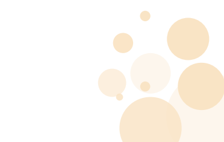

<h1 class="foto" >FOTOS</h1>
<div class="linea-separacion"></div>
<ion-content>
  <ion-card class="vvv">
    
    <ion-grid>
      <ion-row>
        <ion-col size="12">
          <ion-img *ngFor="let image of imageSource" [src]="image" style="width: 400px;" class="pop"></ion-img>
        </ion-col>
      </ion-row>
    </ion-grid>
  </ion-card>
</ion-content>
<ion-button (click)="takePicture()"  class="new">
  <ion-icon  name="camera" class="cam" ></ion-icon>
</ion-button>
<ion-tabs>
  <ion-tab-bar slot="bottom" color="primary"  (click)="takePicture()" >
  </ion-tab-bar>
</ion-tabs>